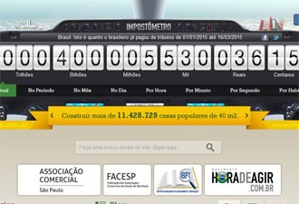

G2 Notícias
G2 Notícias
Brasileiros já pagaram R$ 400 bilhões em impostos este ano
No ano passado, o valor foi registrado no dia 24 de março. Em 2014, o Impostômetro alcançou R$ 1,8 trilhão e bateu novo recorde.

O valor pago pelos brasileiros em impostos federais, estaduais e municipais neste ano alcançou R$ 400 bilhões por volta de 13h45 desta segunda-feira (16), segundo o “Impostômetro” da Associação Comercial de São Paulo (ACSP).
“No ano passado o valor de R$ 400 bilhões do Impostômetro foi registrado no dia 24 de março, mostrando que houve aumento da arrecadação. E esse aumento é resultado da elevação de preços e do fim de isenções fiscais”, afirma Rogério Amato, presidente da ACSP.
O painel eletrônico que calcula a arrecadação em tempo real está instalado na sede da associação, na Rua Boa Vista, região central da capital paulista.
Pelo portal www.impostometro.com.br , é possível descobrir o que dá para os governos fazerem com todo o dinheiro arrecadado. Por exemplo, quantas cestas básicas é possível fornecer, quantos postos de saúde podem ser construídos. No portal também é possível levantar os valores que as populações de cada estado e município brasileiro pagaram em tributos.
Ano passado
Em 2014, o Impostômetro alcançou R$ 1,8 trilhão e bateu novo recorde. A soma representou recorde em relação ao volume de impostos pagos pelos brasileiros em 2013, que ficou em cerca de R$ 1,7 trilhão. Com o montante arrecadado em 2014 é possível comprar 2 bilhões de celulares ou mais de 22,5 milhões de casas, informa a associação.